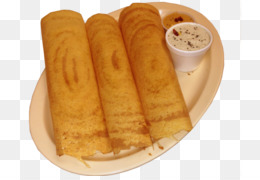

Dosa Recipe

Description
Dosa is a traditional South Indian crepe made of fermented rice batter and urad lentil.
It is commonly eaten alongside a coconut or mint chutney.
Ingredients
- Rice (6 cups)
- Urad lentils (1 cup)
- Water (12 cups)
- Salt (as needed)
Steps
- Soak rice and lentils together in water for 8 hours
- Grind rice and lentils along with water in a blender until a soft consistency is achieved
- Place batter in a stainless steel container, cover and let sit for 8 hours
- If fermentation happens, the batter will rise
- Spread a half cup of fermented batter on a hot griddle
- Enjoy a delicious dosa along with a chutney